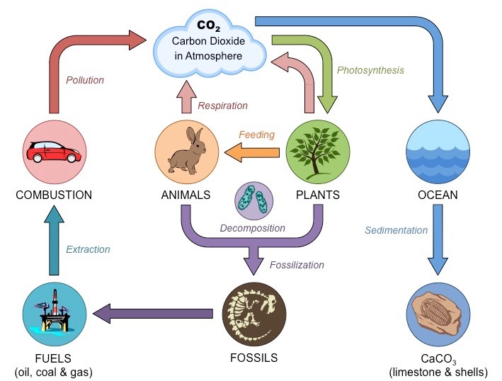
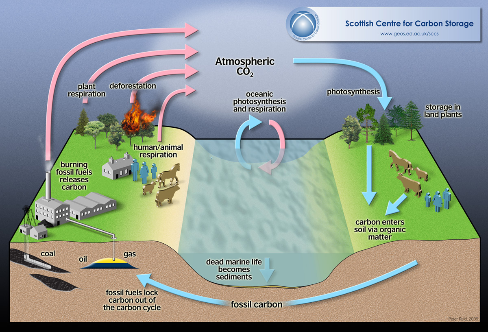

My Future School | Revolutionary Digital Learning Platform
Carbon Cycle
Diagrams & Flow charts:


Theory & Explanation:
One of the most important elements to life on planet Earth is carbon.
All living organisms have carbon as the basis for life. It is so important that animals are often called "carbon-based" life forms. How much carbon is in the human body? Carbon makes up about 18% of the human body. So if you weigh 100 pounds, your body contains around 18 pounds of carbon.
The Carbon Cycle - Some carbon atoms are constantly moving around. This is because carbon atoms are used by all sorts of processes on our planet. Some of these processes put carbon into the atmosphere (air) and some take it out. The carbon cycle is often very tied in with the oxygen cycle.
Taking Carbon out of the Atmosphere
Nature is constantly taking carbon out of the atmosphere. These processes are sometimes called carbon sinks.
Photosynthesis - Plants use photosynthesis to make energy and grow. They take carbon dioxide (CO2), sunlight, and water and turn it into oxygen and sugar. Large areas of plants like the rainforest help to remove lots of carbon from the atmosphere.
The ocean - Ocean water does a lot to remove excess carbon from the atmosphere. Carbon dioxide in the air reacts with the sea water to make carbonic acid in the ocean. If there is too much carbonic acid, you may get acid rain, which is not good. However, some carbonic acid is good as it is used by sea organisms to make their shells. These shells will eventually become sedimentary rock like limestone.
Moving Carbon into the Atmosphere At the same time that some processes of nature are removing carbon from the air, other processes are adding more carbon to the air. These processes are called sources.
Respiration - respiration (breathing) - Every time you breathe you turn oxygen into carbon dioxide. This is true of every animal on Earth. Decay - When plants and animals die they decay. When this happens, the carbon in their body will either be released into the atmosphere or stored in ground as fossil fuels.
Combustion (burning) - When plants, trees, or fossil fuels are burned, carbon is released into the atmosphere. The Carbon Cycle Balance Carbon is essential for life and nature does a great job of balancing the carbon available through the carbon cycle. Carbon is needed in the atmosphere as well because it helps to keep the Earth warm. Without it we would all be freezing. How Man Alters the Carbon Cycle Although nature does a great job in balancing carbon through the carbon cycle, when man gets involved we can upset the balance.
By burning fossil fuels like coal, gas, and oil lots of carbon is released into the air. Also, cutting down trees for development reduces the amount of plants available to remove carbon from the air.